Data Structures and Algorithms
with Object-Oriented Design Patterns in C++
Data Structures and Algorithms
with Object-Oriented Design Patterns in C++A binomial tree is a general tree with a very special shape:
Definition (Binomial Tree) The binomial tree of orderwith root R is the tree
defined as follows
- If k=0, 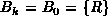. I.e., the binomial tree of order zero consists of a single node, R.
- If k>0, 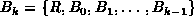. I.e., the binomial tree of order k>0 comprises the root R, and k binomial subtrees,
,
, ..., 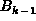.
Figure  shows the first five binomial trees,
shows the first five binomial trees,  -
-  .
It follows directly from Definition that the root of
.
It follows directly from Definition that the root of  ,
the binomial tree of order k,
has degree k.
Since k may arbitrarily large,
so too can the degree of the root.
Furthermore, the root of a binomial tree has the largest fanout of
any of the nodes in that tree.
,
the binomial tree of order k,
has degree k.
Since k may arbitrarily large,
so too can the degree of the root.
Furthermore, the root of a binomial tree has the largest fanout of
any of the nodes in that tree.
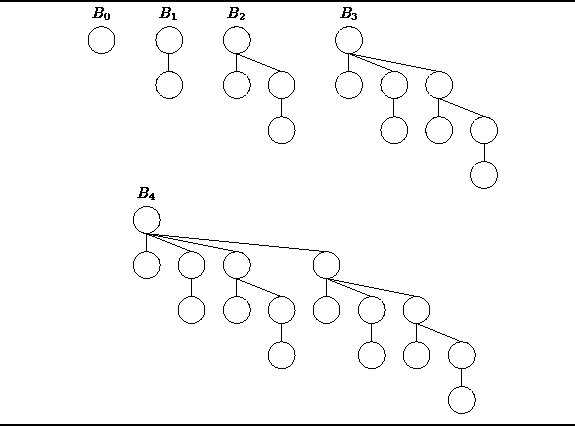
Figure: Binomial Trees  ,
,  , ...,
, ..., 
The number of nodes in a binomial tree of order k is a function of k:
Theorem The binomial tree of order k,nodes.
extbfProof (By induction).
Let  be the number of nodes in
be the number of nodes in  ,
a binomial tree of order k.
,
a binomial tree of order k.
Base Case
By definition,  consists a single node.
Therefore 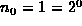.
consists a single node.
Therefore 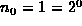.
Inductive Hypothesis
Assume that  for 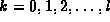, for some 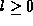.
Consider the binomial tree of order l+1:
for 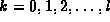, for some 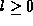.
Consider the binomial tree of order l+1:
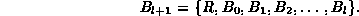
Therefore the number of nodes in 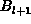 is given by
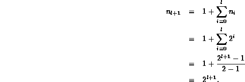
Therefore, by induction on l,  for all
for all  .
.
It follows from Theorem that binomial trees only come
in sizes that are a power of two.
I.e.,  .
Furthermore, for a given power of two,
there is exactly one shape of binomial tree.
.
Furthermore, for a given power of two,
there is exactly one shape of binomial tree.
Theorem The height of
extbfProof (By induction).
Let 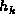 be the height of  ,
a binomial tree of order k.
,
a binomial tree of order k.
Base Case
By definition,  consists a single node.
Therefore 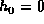.
consists a single node.
Therefore 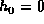.
Inductive Hypothesis Assume that 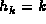 for , for some . Consider the binomial tree of order l+1:
Therefore the height is given by
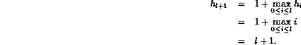
Therefore, by induction on l, for all  .
.
Theorem tells us that the height of a binomial tree of order k
is k and Theorem tells us that the number of nodes is  .
Therefore, the height of
.
Therefore, the height of  is exactly
is exactly  .
.
Figure shows that there are two ways
to think about the construction of binomial trees.
The first way follows directly from the Definition .
I.e., binomial  consists of a root node to which the k binomial trees
consists of a root node to which the k binomial trees
 ,
,  , ..., are attached
as shown in Figure (a).
, ..., are attached
as shown in Figure (a).
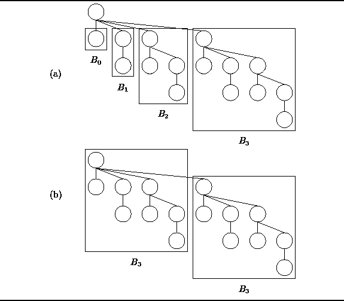
Figure: Two Views of Binomial Tree 
Alternatively, we can think of  as being comprised of two binomial
trees of order k-1.
For example, Figure (b) shows that
as being comprised of two binomial
trees of order k-1.
For example, Figure (b) shows that  is made up of two instances of
is made up of two instances of  .
In general, suppose we have two trees of order k-1,
say 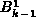 and 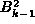,
where 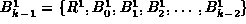.
Then we can construct a binomial tree of order k by combining
the trees to get
.
In general, suppose we have two trees of order k-1,
say 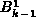 and 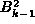,
where 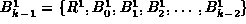.
Then we can construct a binomial tree of order k by combining
the trees to get
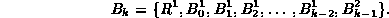
Why do we call  a binomial tree?
It is because the number of nodes at a given depth in the tree
is determined by the binomial coefficient.
And the binomial coefficient derives its name from the binomial theorem.
And the binomial theorem tells us how to compute the
a binomial tree?
It is because the number of nodes at a given depth in the tree
is determined by the binomial coefficient.
And the binomial coefficient derives its name from the binomial theorem.
And the binomial theorem tells us how to compute the  power of
a binomial .
And a binomial is an expression which consists of two terms, such as x+y.
That is why it is called a binomial tree!
power of
a binomial .
And a binomial is an expression which consists of two terms, such as x+y.
That is why it is called a binomial tree!
Theorem (Binomial Theorem) Thepower of the binomial x+y for
is given by
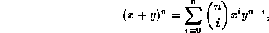
extbfProof
The proof of the binomial theorem
is left as an exercise for the reader (Exercise ).
The following theorem gives the expression for the number of nodes at a given depth in a binomial tree:
Theorem The number of nodes at level l in
extbfProof (By induction).
Let  be the number of nodes at level l in
be the number of nodes at level l in  ,
a binomial tree of order k.
,
a binomial tree of order k.
Base Case
Since  contains a single node,
there is only one level in the tree, l=0,
and exactly one node at that level.
Therefore, 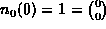.
contains a single node,
there is only one level in the tree, l=0,
and exactly one node at that level.
Therefore, 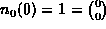.
Inductive Hypothesis
Assume that 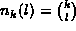 for 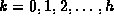, for some  .
The binomial tree of order h+1 is composed of
two binomial trees of height h,
one attached under the root of the other.
Hence, the number of nodes at level l in 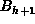
is equal to the number of nodes at level l in
.
The binomial tree of order h+1 is composed of
two binomial trees of height h,
one attached under the root of the other.
Hence, the number of nodes at level l in 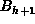
is equal to the number of nodes at level l in  plus the number of nodes at level l-1 in
plus the number of nodes at level l-1 in  :
:

Therefore by induction on h, .
 Copyright © 1997 by Bruno R. Preiss, P.Eng. All rights reserved.
Copyright © 1997 by Bruno R. Preiss, P.Eng. All rights reserved.